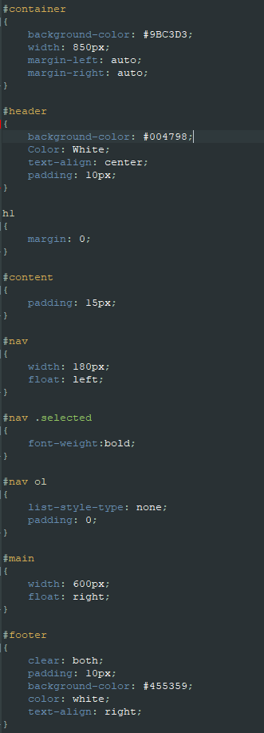

This page will be showing my journey through learning web development throughout learning in this module.
24 April 2020
Starting from the basics of web coding. Leaning HTML from the basics such as the different parts of the code and what each part of the code does. Creating a basic website with just a few simple lines of code. For example, the "Head" tag is meant for naming the webpage when people open up the website. The "Body" tag is where every component is stored such as links to other sites or the main bulk of information the user wants to show. And the "Footer" is where people put copyright tags and other miscellaneous information.
27 April 2020
Learning of CSS and github. The CSS is used to design the webpage how the developer wants it to be. With CSS many types of webpage layouts are possible such as the one being used on this site right now. CSS allows the developer to control which area has a certain design and layout. Such as having an entire navigation section on the left hand side of the webpage while the main content of the page is on the right. Github is used to store the codes for the website while at the same time hosts it, allowing people to browse the site if they have the link.

4 May 2020
Learning Markdown and how it corresponds to HTML. It does the same job as what HTML does and it is a much simpler way to code a website. The downside to it being that upon uploading to github, it takes awhile for it to be posted as a website due to it being converted into HTML. Lots of lines are cut down compared to HTML even though both are to produce the same results.